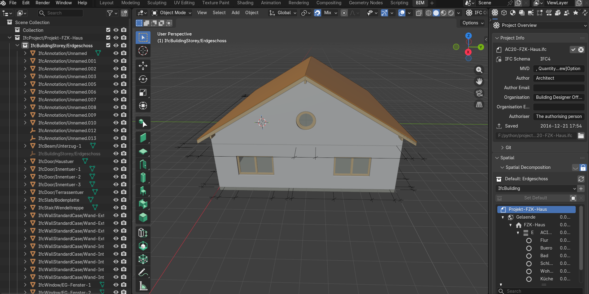
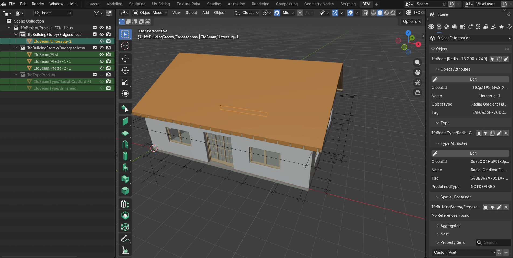
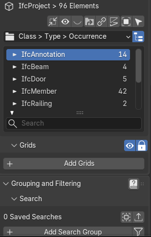

Module 3.2 covered why IFC2x3, IFC4, and IFC4.3 all still exist side by side, and why the right version depends on what both sides of an exchange can actually handle. None of that means much until a file is actually open in front of you. This lesson is the first hands-on moment in the series, opening a real IFC file and looking closely at what it's actually telling you, at three different levels, before drawing any conclusions about what's there.
This lesson uses Bonsai, a free, open source IFC authoring tool that can also be used purely as a viewer. It isn't the only option. BIMvision is a small, free Windows viewer with a plugin architecture, popular for its light footprint. usBIM.viewer+ runs in the browser, is buildingSMART certified, and can edit models as well as view them. Trimble Connect, which grew out of the earlier Tekla BIMsight, offers a free tier with IFC viewing built into its cloud platform. Newer browser-native options like IFC Lite are also emerging, built to open files instantly with no install at all. The space keeps shifting too, Solibri Anywhere, a long-standing free desktop option, was declared legacy in April 2026. None of these tools change what's actually inside an IFC file. They're simply different windows onto the same data, and this lesson uses Bonsai because it's what the rest of this series will keep coming back to.
Someone opening an IFC file for the first time usually expects one thing: a 3D model. And there it is, walls, a roof, windows, sitting in the viewport looking exactly like a small house.
But look to the right of the model, and the file has already told you something before you've examined a single wall. That panel carries a block of information with nothing to do with geometry at all: which IFC schema the file was written in, IFC4 here, which Model View Definition it was exported against, who authored it, what organisation they worked for, and the exact date and time it was last saved, 2016 in this case, years before you ever opened it. None of that came from measuring the building. It came from the file simply carrying data about its own creation, exactly the kind of thing Module 3.1 pointed at when it said an IFC file describes far more than what something looks like.

The same pattern repeats at a smaller scale. Select a single object, in this case a beam, and a details panel opens with everything the file knows about it. It's dense, and most of it belongs to a later lesson, but two fields are worth focusing on now.
Near the top, under Object Attributes, sits a field called GlobalId. This is not something a modeller types in or chooses. It's a permanent, machine-generated identifier assigned automatically the moment the element is created, and by definition it never changes for the life of that object, even if the element is later renamed or moved between files. It's less a label and more a fingerprint, one that stays valid no matter what happens to the model afterward.
Further down the same panel sits Spatial Container, stating plainly which storey this exact beam belongs to. The element isn't just floating in space with a shape. Just like the file itself, it carries information about its own identity and its own place in the structure, before anyone has asked it to.
Everything else visible in this panel, the Type Attributes block above it, the Property Sets section below, goes considerably deeper than a first look needs to, and that's exactly where Module 4 picks up.

Two levels in, and the pattern so far has been generous: the file describes itself, and every element describes itself too. It would be easy to assume this generosity extends to everything the file lists. It doesn't.
Open the full inventory of everything in the file, grouped by type, and one line breaks the pattern. In this file, IfcAnnotation sits at the top with 14 instances, more than the beams, more than the doors. IfcAnnotation elements are not building elements at all. buildingSMART's own schema documentation is specific about this: this entity exists to carry presentation information, things like tag numbers or hatching, that cannot be tied to a single building element's own representation. In practice, this usually means dimension lines and drawing annotations. IFC doesn't have a way to intelligently carry a dimension as dimension data, so when a tool exports one, it falls apart into plain lines and text, stored as IfcAnnotation. ArchiCAD's own documentation confirms this happens by design, not by accident.
Fourteen entries in this file's inventory, then, aren't describing the building at all. They're drafting residue, carried along for the ride during export, sitting in the same list as every wall and every door, with no obvious flag to separate them. A file that generously describes itself and every real element inside it can still list things that were never structural to begin with.

This lesson looked at what an IFC file volunteers, about itself, about each element, and where that generosity quietly runs out. The next lesson goes underneath the viewer entirely, opening the same file as plain text, to see what all of this actually looks like in its raw form.
Comments use a free GitHub account — takes under a minute to create, and keeps discussions spam-free and permanently archived.